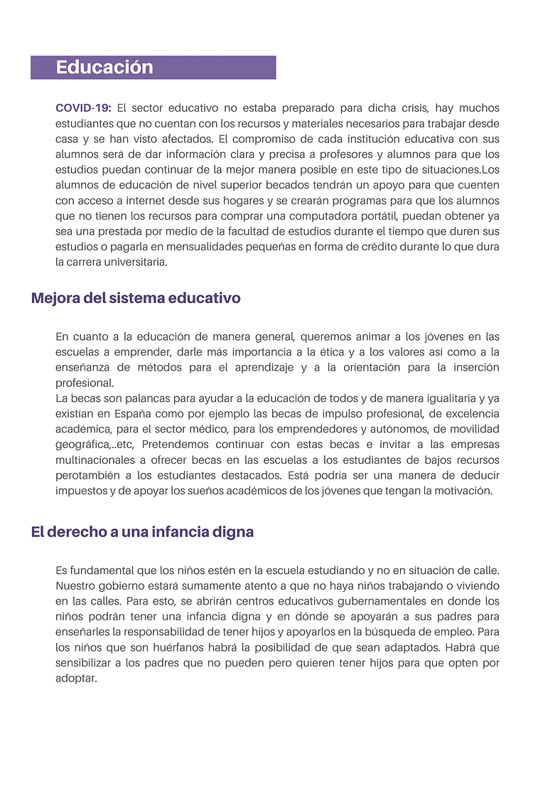
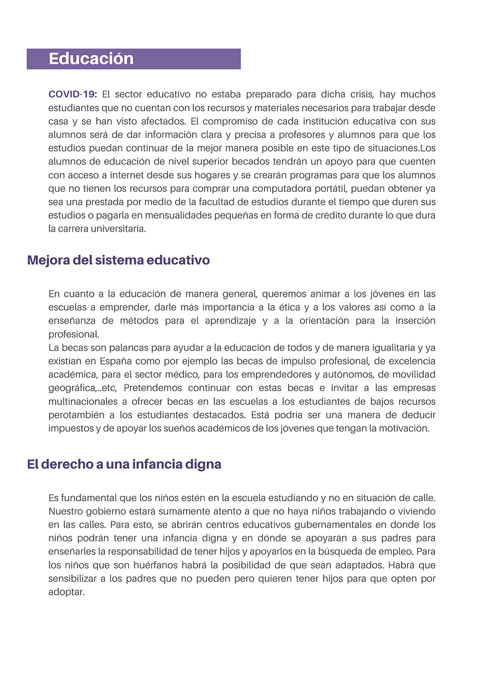

Projet réalisé dans le cadre d'un cours de marketing stratégique et opérationnel.
La consigne était de trouver une idée innovante, la développer et la présenter en fin de semestre au reste de la classe. Nous avons eu l'idée d'un bar à cocktails spatio-temporel composé de différentes salles thématiques possédant chacune des exclusivités.
J'ai réalisé et communiqué la charte graphique au reste de l'équipe, réalisé le logo, réalisé le support de la présentation finale et mis en page la plupart des documents rendus.Logo
Logo réalisé avec Canva.
Charte graphique
Charte graphique réalisée avec Canva une fois notre identité de marque définie.
Carte du bar
Mise en page de la carte réalisée avec Canva. La dernière page est un exemple de carte que l'on peut trouver dans l'une des salles à thème avec ses exclusivité (ici la salle chalet), le défi sur cette carte était de laisser paraitre l'identité propre à la salle sur la carte tout en gardant des éléments propre à la marque Multiverres.
 
